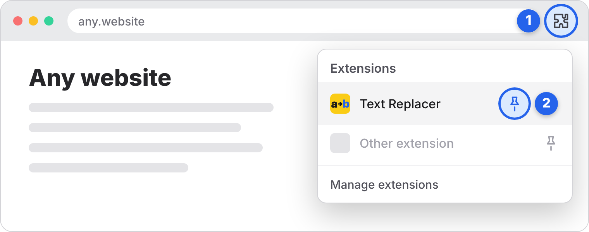
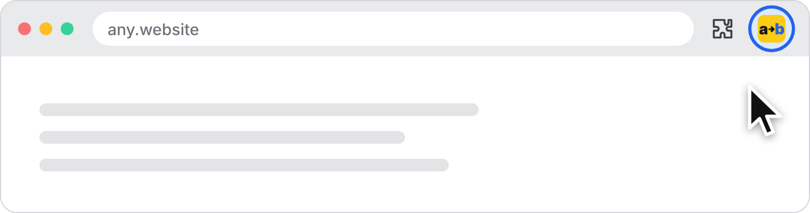
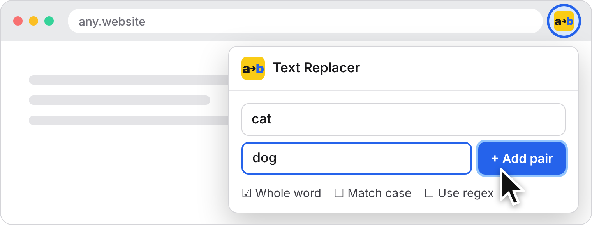
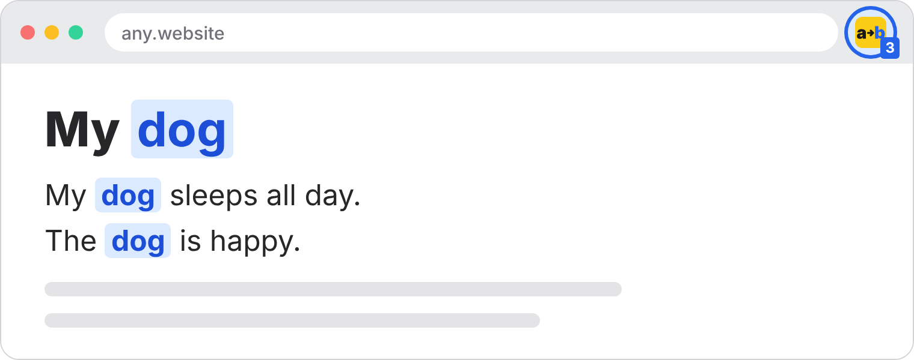
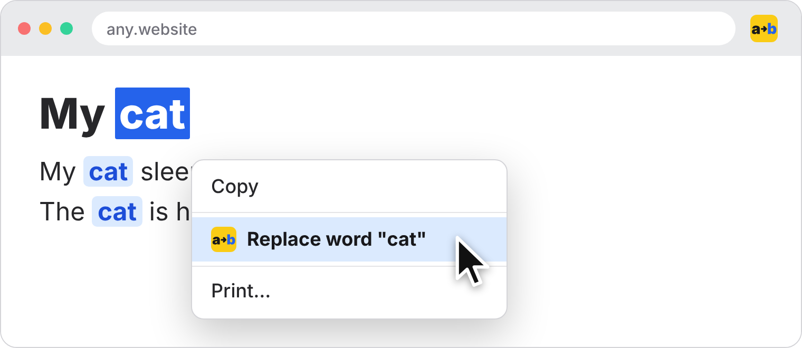

Text Replacer Is Installed
Pin it to your toolbar to use it in one click.
- Click the puzzle icon (1) in the top right corner of Chrome.
- Find Text Replacer and click the pin icon (2) next to it.

Already pinned? See how to use Text Replacer
Text Replacer Is Ready
It's on your toolbar. Here's how to get started:
-
Click the a→b icon on your toolbar.

-
Type a word to find and its replacement, then click Add pair.

-
Open any website. The word is replaced, and the number on the icon shows how many times.

-
Or right-click any word on a page and choose Replace word.

Don't see the icon on your toolbar? Show how to pin it